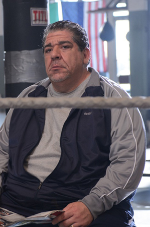

Diaz went on to do various movies and TV shows in his later career such as Spiderman 2 and roles on TV shows like Law & Order: Special Victims Unit and Everybody Hates Chris. Many of the films and or TV shows that he worked on were never picked up and put on the air. It did however open up new opportunities for him to get more work in the film industry. Joey started stand up comedy back in the early 90's but admits that it take a long time to even get used to the basics of comedy and even more years to perfect jokes. Joey and his podcast bring in several thosands of listeners every time it is on and many more watch recordings of the podcast on YouTube. This has allowed Diaz to grow his following tremendously and keep in touch with his fans more then ever. In recent years Joey has been on many other podcasts which has brought attention to him in the comedy world. Later on after having a few succesful movies under his belt he still went on to do various commericals and other small film projects that Joey has thought up of. Joey has his first child back in 2013 and is living a fairly well life with his family.
